zVSAM V2 - Physical structure of the files
Basic Concepts
Files, Blocks, Records
The logical unit of access or storage is the record. Yet the unit for any given I/O operation is the block. Block sizes may vary from 512 bytes to 16MB. Each block holds up to 255 records. For any given cluster component, choosing an appropriate block size is important. Block size can greatly affect not only performance, but also both internal and external storage consumption.
A cluster consists of one or more files that belong together and should be managed together. Whether you take a backup, perform a restore, or perform other administrative tasks, the files that make up a cluster should be managed alike. When creating a backup copy of a cluster or restoring a cluster, make sure no other processes try to access the data at the same time.
zVSAM implements a number of checks and balances to prevent inadvertent access to data that may have been compromised. Names and locations of files are managed. Tampering with files or file attributes may render the cluster unusable.
As a result, it is not possible to rename a zVSAM cluster or file. Unload and reload your cluster in order to move the data or to assign a different name to cluster or file.
Just like files in a cluster belong together and should be managed together, clusters in a sphere are logically connected and should be managed together. Again, failing to manage the files in a correct and comprehensive manner may render your data inaccessible.
Cluster types and Cluster Components
Each cluster consists of a data component and an index component as follows:
| Cluster type | Index content |
|---|---|
| ESDS | Index on XRBA |
| KSDS | Index on key value |
| RRDS | Index on RRN |
| AIX | Index on alternate key value |
Record Formats
In zVSAM we support the following record formats:
| Format | Properties |
|---|---|
| F | Fixed. All records have the same length. Records never span a Block boundary |
| FS | Fixed Spanned. All records have the same length. Records expected to span a Block boundary |
| V | Variable. Records have varying lengths. Records never span a Block boundary |
| VS | Variable Spanned. Records have varying lengths. Records may or may not span a Block boundary |
For ESDS, KSDS, and RRDS all record types are supported. For AIX only F and VS record formats are supported: F for unique, and VS for non-unique indexes.
Supported Record Formats:
| Cluster Type | F | FS | V | VS |
|---|---|---|---|---|
| ESDS | Y | Y | Y* | Y* |
| KSDS | Y | Y | Y | Y |
| RRDS | Y | Y* | Y | Y* |
| AIX - unique | Y | N | N | N |
| AIX - non-unique | N | N | N | Y |
* zVSAM extension
For a unique AIX each record holds an alternate key value plus the primary key (KSDS) or XLRA (ESDS) of the associated record in the cluster's data component. This fixed configuration dictates a record type of F.
For a non-unique AIX each record holds an alternate key value and as many primary keys (KSDS) or XLRAs (ESDS) of associated records in the cluster's data component as there are records holding that specific alternate key value. The table of primary keys may vary in length from 1 to very large numbers. No block size is guaranteed to be large enough to hold the largest possible index record, therefore a record type of VS is mandated. When a non-unique index record needs to be split into segments, no primary key value or XLRA is ever split; i.e. only an exact number of these reside within a single segment of the record.
Supported Index-types:
| Cluster Type | Primary - Unique | AIX - unique | AIX - Non-unique |
|---|---|---|---|
| ESDS | Y* | Y | Y |
| KSDS | Y | Y | Y |
| RRDS | Y* | N | N |
* zVSAM extension
File Structure
Physical files
All zVSAM data is stored in physical files, as defined to the operating system. Each component consists of one file. This file is formatted as a zVSAM file, the structure of which is explained in the next set of chapters.
Please note: the hosting operating system may impose a limit on physical file size and not every host OS supports a physical file spanning a volume boundary of the storage device(s). Therefore, to support clusters that exceed the maximum size of a single physical file, in the future we may need to support clusters that consist of multiple files.
Structure of physical files
Every zVSAM file has a block size. The block being the basic unit of I/O. The first block of every file is the prefix block, which is always 4096 bytes in size. The prefix block holds information about the cluster, its data, and its structure.
Data in the prefix block are not accessible to user programs. However, selected fields in the prefix block can be queried using a SHOWCB ACB= request.
All Data and Index blocks in the file have a user-defined blocksize (DATABLOCKSIZE= and
INDEXBLOCKSIZE=). The file is assumed to logically begin with the first block after the prefix block
There are 5 types of blocks that may occur in zVSAM files:
1. Prefix block – one for each file, being the first 4096 bytes of every file
2. Spacemap block – used to manage free space in the file
3. Data block – used to hold user data, or AIX data records (in an AIX only)
4. Index block – used to hold index information
5. ELIX block – used to index segmented (read: large) non-unique AIX records
Every block has an internal structure consisting of a block header, a list of record s, a block body and a block footer. The block header and footer have a fixed structure. The list of record s has a variable length. The block body contains record data and/or free space.
Each of the 5 block types is explained in more detail below
Block Header Structure
Every block has a block header (ZVSAMHDR). All block headers have the same structure.
BHDRSEQ# is incremented by one every time the block is written out to the file.
The footer area contains a comparable field: BFTRSEQ#. Together they guard against incomplete writes.
BHDRXLVL indicates the index level. Zero is the leaf level. Index blocks are chained by level. That is, for
every index level in use there is a pair of pointers in the prefix block (PFXBLVLn/PFXELVLn) that starts and ends
the chain for that level.
BHDRSELF contains the block's own XLRA. This helps to guard against misdirected reads and/or writes.
BHDRNEXT/BHDRPREV point to the next and previous block on the chain. Which chain this is, depends
on the BHDRFLAG setting, and, if this is an index block, by the BHDRXLVL value.
For the prefix block, these two fields are set to foxes.
Segmented records are a special case. Segments of a segmented record never share their block with other data. The block holding the first segment is part of the data chain. A block holding a non-first segment is part of the segment chain. A block that holds a record's first segment has an SPX pointing to the block holding the next segment. Subsequent segments are retrieved by following the SPXs to the last segment of the record
The Segment chain starting at PFXBSEGM and ending at PFXESEGM has no role in processing a spanned
dataset but just provides an extra integrity check.
Block Footer Structure
Every block has a block footer zVSAMFTR). All block footers have the same structure.
BFTRSEQ# is incremented by one every time the block is written out to the file.
The header area contains a comparable field: BHDRSEQ#. Together they guard against incomplete writes.
Prefix Block
The prefix block (ZVSAMPFX) consists of the first 4096 bytes of every physical file. It contains meta-data
defining the file and its attributes. It also contains various counters.
The prefix block consists of a block header immediately followed by the prefix area. The prefix block also contains other data fields, these are addressed from the prefix area. The prefix block ends with a block footer. A record list is not present on the prefix block.
There are various fields in the prefix area. These point to fields allocated elsewhere in the prefix block. Their
exact addresses on the prefix block may vary:
- PFXDPAT@, PFXDNAM@, PFXXPAT@, PFXXNAM@ all point to a halfword-prefixed string.
- PFXDVOL@ and PFXXVOL@ contain foxes (future option)
The Counters area (ZVSAMCTR) directly follows the Prefix area, it is doubleword aligned.
This area is expected to move into the catalog dataset in a future release.
The overall structure of the prefix block would look something like this (areas not to scale):

Prefix Block chain summary
The following table summarizes the way that blocks in the file are chained from the prefix block. The prefix block doesn't reside on any chain.
| Block Type | Beginning of chain | End of chain |
|---|---|---|
| Prefix | foxes | foxes |
| Spacemap | PFXBMAP |
PFXEMAP |
| Data (in use and free) | PFXBDATA |
PFXEDATA |
| Data (non-first segments) | PFXBSEGM |
PFXESEGM |
| Index (in use and free) | PFXBLVLn |
PFXELVLn |
Counters Area and its maintenance
All fields are 8 bytes except CTRAVGRL which is 4 bytes.
| Counter | Data/Index | Initialized by zREPRO | Maintenance |
|---|---|---|---|
| CTRAVGRL | Both | Yes. For fixed, =PFXRECLN even if the dataset is empty. |
For variable files only: |
| For variable, calculated or zero if the dataset is empty. | At CLOSE, calculate CTRTOTRL/CTRNLOGR |
||
| CTRAVSPAC | Both | Yes. | For every block update use the old and new BHDRFREE to increase/decrease this value |
| CTRHALCRBA | Both | Yes. | Updated when blocks are added to the end of the dataset component |
or when the existing HALCRBA block has all records deleted. It's the |
|||
| block RBA+1 (XLRA+256) of the last data or level 0 index block containing records. | |||
| CTRHLRBA | Index only | Yes. | Block RBA of PFXROOT. Update if it changes |
| CTRENDRBA | Both | Yes. | Updated when blocks are added to the end of the dataset component. |
| It's the block RBA+1 (XLRA+256) of the last data or level 0 index block | |||
| CTRNBFRFND | Both | No | +1 for each LSR buffer read |
| CTRNBUFNO | Both | No | +1 for each buffer allocated |
| CTRBUFUSE | Both | No | +1 for each buffer used |
| CTRBUFRDS | Both | No | +1 for each buffer read |
| CTRNCIS | Both | No | +1 for each block split |
| CTRNDELR | Both | No | KSDS or RRDS: +1 for each record delete |
| CTRNEXCP | Both | No | +1 for each physical block read/write |
| CTRNEXT | Both | Yes | Always 1, not maintained |
| CTRNINSR | Both | No | +1 for each record added. For RRDS, any empty slots added to the end are not counted |
| CTRNLOGR | Both | Yes | +1 for each record added; -1 for each record deleted. |
| For RRDS, any empty slots added to the end are not counted | |||
| For Index, all records in all levels are counted | |||
| CTRNRETR | Both | No | +1 for each record read |
| CTRNNUIW | Both | No | +1 for each maintenance write for block splits, chain repair, segment, spacemap |
| and ELIX block management | |||
| CTRNUPDR | Both | No | +1 for each record update |
| CTRSDTASZ | Both | Yes | +block size for each block added |
| CTRSTMST | Both | Yes | Write STCK value at CLOSE |
| CTRSTRMAX | Both | No | +1 for each string created |
| CTRNUIW | Both | No | +1 for each user-requested block write |
| CTRTOTRL | Data only | Yes | Maintained for variable files only: |
| +record size for each record added; -record size for each record deleted | |||
| SPX is not included; RLF is included; Adjusted for change to variable length | |||
| For RRDS, empty slots are not included | |||
| CTRLOKEY | Data only | Yes | KSDS only. Update when a lower key is added or this key is deleted |
Spacemap Blocks
Spacemap blocks (ZVSAMMAP) are used to manage available free space in a component. Each spacemap
block has a size that matches the blocksize of all other blocks (except possibly the prefix block) in the
component.
A component will hold as many spacemap blocks as needed to map all of its allocated blocks, including all
spacemap blocks but excluding the prefix block. Whenever a single spacemap block is not enough, the
spacemap blocks are chained together by means of the BHDRNEXT/BHDRPREV pointers in the block header area.
The spacemap chain starts/ends from the prefix block, fields PFXBMAP/PFXEMAP.
When a single spacemap block suffices, PFXBMAP and PFXEMAP will both point to that block.
Each spacemap block consists of a block header immediately followed by the spacemap area, which in turn
is followed directly by the block footer. No free space exists on a spacemap block. Thus, a spacemap block
may indicate blocks that do not exist in the dataset. The bit settings for blocks beyond the PFXHXLRA
should all be zero to indicate an unallocated block. zVSAM is aware that any block beyond PFXHXLRA
needs to be created and initialized before it can be allocated.
Conceptually, the overall structure of a spacemap block would look something like this (areas not to scale):

Record List Structure (RPTR)
Every block that contains data records contains a record list (ZVSAMRPT). Records are accessible only
through their Record pointer or RPTR. Every entry in the list corresponds with a single record on the block. The last
byte of the record's XLRA is the index into the Record List. Index value of X'00' is reserved for block pointers;
values X'01' through X'FF' inclusive are usable as RPTR index values. The difference of 1 always needs to
be taken into account when indexing the RPTR list.
The RPTR list always follows the block header directly.
The number of entries on the RPTR list varies with the number of records stored on the block (BHDR#REC)
and is terminated with an entry of foxes to mark the end of the list.
When RPTR_END is set, RPTRREC@ is set to foxes.
RPTR_ACT and RPTR_MTY are mutually exclusive. Either one must be set, otherwise the RPTR list is
compromised and data access will fail. RPTR_MTY indicates an empty RRDS slot.
Segment Prefix (SPX)
All segments begin with a segment prefix (ZVSAMSEG).
The first segment is on the Data chain and subsequent segments are retrieved via SPXBNEXT.
The flag SPXSEGCC indicates the first, middle or last segments.
Data Blocks
Data Block Structure (SPANNED=NO)
Assume we have a cluster with three data blocks holding records. The blocks are on the data chain as outlined in the picture below. Please note that all depicted pointers are block pointers. Each thus originates with the indicated field, and ends at the block it points to. The location where the arrows attach has no meaning since it's a block pointer.

Data Block Structure (SPANNED=YES)
Now suppose we have a cluster with three data blocks, the first block holding two unsegmented records, the second block holding the first segment of a record consisting of three segments and the third block holding the first segment of a record consisting of two segments.
In the picture we show the data chain as a solid line (as in the picture above), we show the segment chain as a dotted line, and we show the SPX s as a fat line.
The picture shows the prefix area's pointer to start/end block of both the data chain and the segment chain It also shows the first and second block pointer on each chain pointing to one another. Same thing for the second and third block pointer on each chain.
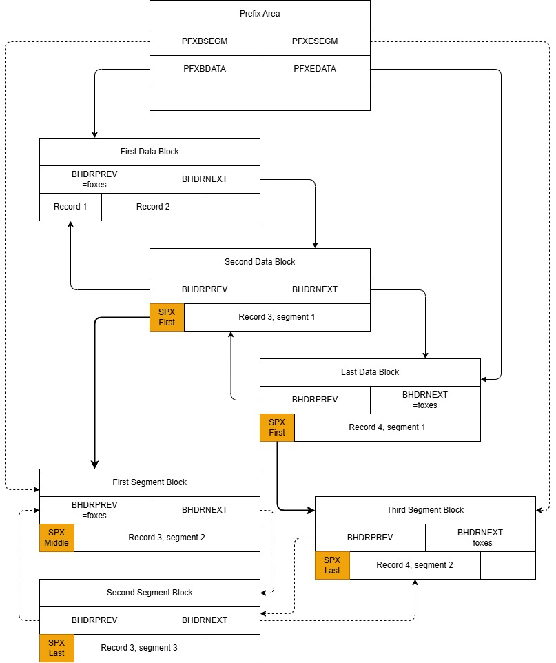
All depicted pointers are block pointers. Each originates with the indicated field, and ends at the block it points to. The location where the arrows attach has no meaning since it's a block pointer.
Data Block
Each record has an RPTR block, they are created after the Block Header.
In addition to the offset, the RPTR contains flags to identify the type and status of each record.
RPTR_END marks the end of records in this block.
The records are placed in reverse order in the block to consolidate free space at the centre
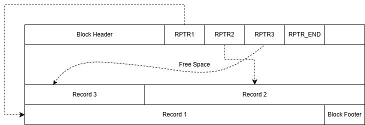
It is possible to reserve an amount of freespace at load time which also applies if a block is split.
It is specified in the catalog as DATAFREESPACE=nn, where nn is a percentage of the available space.
Only a fixed non-spanned KSDS can specify free space.
For all types of fixed non-spanned datasets, the available space may not be a multiple of the data record size
resulting in unusable space. To correct this use DATAADJUST=YES which will calculate an optimal
blocksize less than the specified one.
AIX Blocks
AIX Block Structure (Unique)
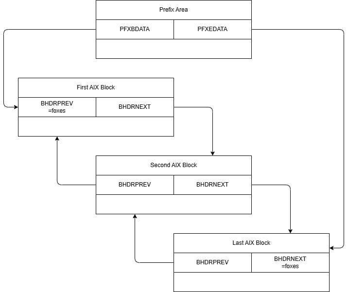
AIX Block (Unique)
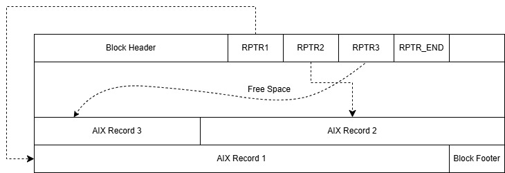
AIX unique records have the following format:
| AIX on ... | Record Format |
|---|---|
| KSDS | AIX key followed by primary key |
| ESDS | AIX key followed by XRBA(8) |
AIX Block Structure (Non-unique)
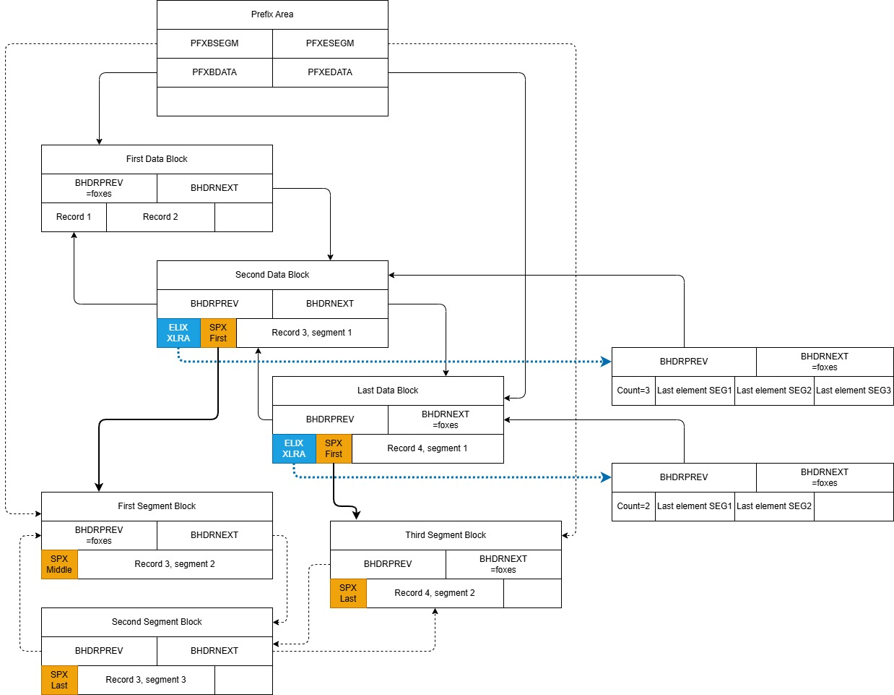
AIX Block (Non-unique and not segmented)
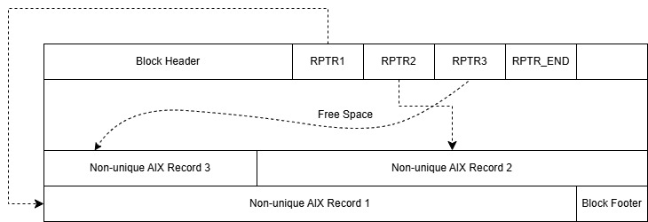
AIX non-unique non-segmented records have the following format:
| AIX on ... | Record Format |
|---|---|
| KSDS | AIX key, an element count n(4) followed by n primary keys |
| ESDS | AIX key, an element count n(4) followed by n XRBAs(n*8) |
AIX Block (Non-unique and segmented)
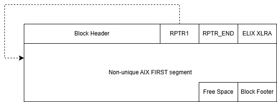
Each segment contains a whole number of elements.
AIX non-unique segmented records have the following formats:
| AIX on ... | Record Format of FIRST segment |
|---|---|
| KSDS | SPX, AIX key, an element count(4) which is the total no. of elements in all segments. |
The actual number of primary keys in this segment can be calculated from SPXSEGLN |
|
| ESDS | SPX, AIX key, an element count(4) which is the total no. of elements in all segments. |
The actual number of XLRAs in this segment can be calculated from SPXSEGLN |
| AIX on ... | Record Format of MIDDLE or LAST segments |
|---|---|
| KSDS | SPX and a number of primary keys. |
The actual number of primary keys in this segment can be calculated from SPXSEGLN |
|
| ESDS | SPX and a number of XLRAs. |
The actual number of XLRAs in this segment can be calculated from SPXSEGLN |
ELIX Block
A single ELIX block is created for each non-unique AIX record that is segmented. It has the same blocksize as a Data record.
zVSAM lifts the current IBM restriction of 32K elements in a non-unique AIX record, because of this there may be many segments to read to find an element to delete or an insertion point for a new record.
The ELIX Block provides an extra index on the segments and contains the highest element in each segment. As there is currently only one ELIX Block per AIX key this places a limit on the number of elements.
When a non-unique AIX is built zREPRO will issue a message on the log like this:
zREPRO AIX MAX ELEMENT LIMIT 87654
If the number of elements is too low then rebuild the AIX with a larger blocksize.
IBM does not maintain elements in any particular order but for the ELIX structure to work zVSAM will maintain elements in sequence.
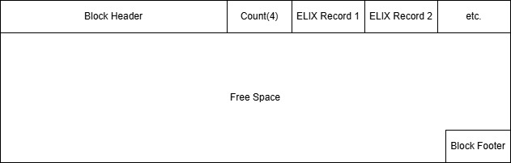
The ELIX record has the following format:
| AIX on ... | Record Format |
|---|---|
| KSDS | Highest Primary key followed by the XLRA of the segment (always record 1) |
| ESDS | Highest XRBA followed by the XLRA of the segment (always record 1) |
Index Blocks
Each record has an RPTR block, they are created after the Block Header.
In addition to the offset, the RPTR contains flags to identify the type and status of each record.
RPTR_END marks the end of record pointers in this block.
The records are placed in reverse order in the block to consolidate free space at the centre.
For Level 0 each record is the key (KSDS), XRBA (ESDS) or RRN (RRDS) and is followed by an XLRA. The XLRA is a record pointer to the Data block.
For other levels, each record pointer is the highest key, XRBA or RRN followed by an XLRA. The XLRA is a block pointer to the previous level.
As each index record is a fixed size it is recommended to specify INDEXADJUST=YES to avoid unusable
free space
Index Block Structure: Single level
This example shows an index of only one block, holding two record pointers

Index Block Structure: Two Levels
This example shows the index after adding three more record pointers, causing the only index block to overflow and split. Now there are two leaf blocks, still on the LVL0 chain, and a new root block has been created on the LVL1 chain

Index Block Level 0
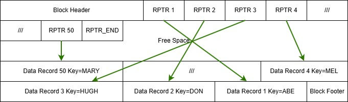
Index Block other levels
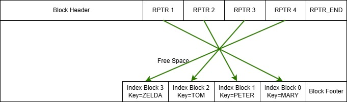
It is possible to reserve an amount of freespace at load time which also applies if a block is split.
It is specified in the catalog as INDEXFREESPACE=nn, where nn is a percentage of the available space.
Only a fixed non-spanned KSDS can specify free space.
For all types of fixed non-spanned datasets, the available space may not be a multiple of the index record size
resulting in unusable space. To correct this use INDEXADJUST=YES which will calculate an optimal
blocksize less than the specified one.
Structure and Functions by dataset type
KSDS Fixed non-Spanned
F-type records are conceptually stored one after another, filling the block until no space is left.
When the remaining free space is insufficient to accommodate another record, that free space remains
unusable. Unusable space can be eliminated by building the dataset with DATAADJUST=YES.
Blocks can be allocated with free space for adds (DATAFREESPACE=nn%), when the block is full the
block will be split and any new block will have nn% free space.
Format:
| Function | Notes |
|---|---|
| Add | Yes |
| Update | Yes, the primary key must not be changed |
| Delete | Yes |
| Length | change n/a |
| Access by | Primary key or AIX key. (X)RBA not yet implemented |
KSDS Fixed Spanned
FS-type records are conceptually stored one after another, using a block for each segment and starting each record on a new block. Record size is expected to exceed block size, so the record is split into segments, the first segment is created to fill an entire block, and the rest of the record goes into one or more secondary segments which are stored on the next blocks.
Each segment is preceded by a Segment Prefix (SPX, marked in yellow)
zVSAM extension: The primary key and any AIX keys need not be in the first segment.
Below we show an example where each record requires three segments:
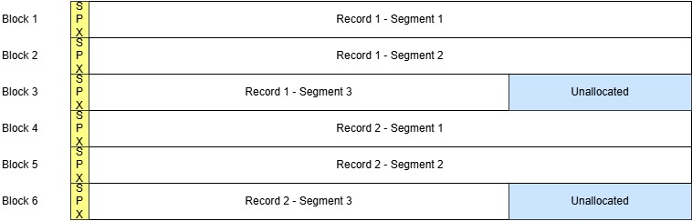
| Function | Notes |
|---|---|
| Add | Yes |
| Update | Yes, the primary key must not be changed |
| Delete | Yes |
| Length change | n/a |
| Access by: | Primary key or AIX key. (X)RBA not yet implemented |
KSDS Variable non-Spanned
V-type records are conceptually stored one after another, filling the block until no space is left. Every record is preceded by a Record Length Field (RLF, marked in grey).
When remaining free space is insufficient to accommodate another record, that free space remains unallocated (marked in blue) and the record is placed on the next block.
Below we show an example showing how various numbers of records might fit into the blocks:
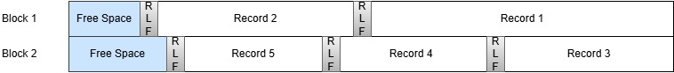
| Function | Notes |
|---|---|
| Add | Yes |
| Update | Yes, the primary key must not be changed |
| Delete | Yes |
| Length change | Yes. When a record is shortened it must not affect the primary key or any AIX key |
| Access by: | Primary key or AIX key. (X)RBA not yet implemented |
KSDS Variable Spanned
VS-type records are conceptually stored one after another, filling the block until no space is left. Every record is preceded by a Record Length Field (RLF, marked in grey). When remaining free space is insufficient to accommodate another record, that free space remains unallocated (marked in blue) and the record is placed on the next block.
Only if the record size exceeds the usable block size is the record is split into segments and each segment is prefixed with a Segment Prefix. The first segment is created to fill an entire block, and the rest of the record goes into one or more secondary segments which are stored on the next blocks. Each segment is preceded by a Segment Prefix (SPX, marked in yellow).
zVSAM extension: The primary key and any AIX keys need not be in the first segment.
Below we show an example showing how various numbers of records might fit into the blocks of the file, or how a single record might occupy multiple blocks of the file.
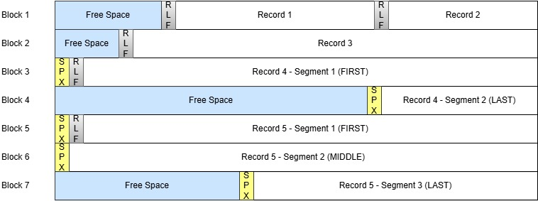
| Function | Notes | | Add | Yes | | Update | Yes, the primary key must not be changed | | Delete | Yes | | Length change | Yes. When a record is shortened it must not affect the primary key or any AIX key | | Access by: | Primary key or AIX key. (X)RBA not yet implemented |
ESDS Fixed non-Spanned
F-type records are conceptually stored one after another, filling the block until no space is left.
When the remaining free space is insufficient to accommodate another record, that free space remains
unusable. Unusable space can be eliminated by building the dataset with DATAADJUST=YES.
Format:
Note: The format of an ESDS block with Fixed records is identical to that for a KSDS.
The only difference being that free-space (DATAFREESPACE=nn%) does not apply to ESDS datasets.
| Function | Notes |
|---|---|
| Add | Yes, but only to the end of the dataset |
| Update | Yes |
| Delete | No |
| Length change | n/a |
| Access by: | (X)RBA or AIX key |
ESDS Fixed Spanned
FS-type records are conceptually stored one after another, using a block for each segment and starting each record on a new block. Record size is expected to exceed block size, so the record is split into segments, the first segment is created to fill an entire block, and the rest of the record goes into one or more secondary segments which are stored on the next blocks.
Each segment is preceded by a Segment Prefix (SPX, marked in yellow)
zVSAM extension: Any AIX keys need not be in the first segment.
Below we show an example where each record requires three segments:
Note: The format of an ESDS block with Fixed Spanned records is identical to that for a KSDS.
| Function | Notes |
|---|---|
| Add | Yes, but only to the end of the dataset |
| Update | Yes |
| Delete | No |
| Length change | n/a |
| Access by: | (X)RBA or AIX key |
ESDS Variable non-Spanned
V-type records are conceptually stored one after another, filling the block until no space is left. Every record is preceded by a Record Length Field (RLF, marked in grey).
When remaining free space is insufficient to accommodate another record, that free space remains unallocated (marked in blue) and the record is placed on the next block.
This dataset type is a zVSAM extension.
Below we show an example showing how various numbers of records might fit into the blocks
Note: The format of an ESDS block with Variable records is identical to that for a KSDS.
| Function | Notes |
|---|---|
| Add | Yes, but only to the end of the dataset |
| Update | Yes |
| Delete | No |
| Length change | No |
| Access by: | (X)RBA or AIX key |
ESDS Variable Spanned
VS-type records are conceptually stored one after another, filling the block until no space is left. Every record is preceded by a Record Length Field (RLF, marked in grey). When remaining free space is insufficient to accommodate another record, that free space remains unallocated (marked in blue) and the record is placed on the next block.
Only if the record size exceeds the usable block size is the record is split into segments and each segment is prefixed with a Segment Prefix. The first segment is created to fill an entire block, and the rest of the record goes into one or more secondary segments which are stored on the next blocks.
Each segment is preceded by a Segment Prefix (SPX, marked in yellow).
This dataset type is a zVSAM extension.
zVSAM extension: Any AIX keys need not be in the first segment.
Below we show an example showing how various numbers of records might fit into the blocks of the file, or how a single record might occupy multiple blocks of the file
Note: The format of an ESDS block with Variable Spanned records is identical to that for a KSDS.
| Function | Notes |
|---|---|
| Add | Yes, but only to the end of the dataset |
| Update | Yes |
| Delete | No |
| Length change | No |
| Access by: | (X)RBA or AIX key |
RRDS Fixed non-Spanned
F-type records are conceptually stored one after another, filling the block until no space is left.
When the remaining free space is insufficient to accommodate another record, that free space remains
unusable. Unusable space can be eliminated by building the dataset with DATAADJUST=YES.
An RRDS consists of slots (RRNs) which may or may not contain a record.
Empty slots are initially binary zeros with RPTR_MTY set.
Below we show an example where 8 record slots fit into a block:
| Function | Notes |
|---|---|
| Add | Yes, but only to the end of the dataset |
| Update | Yes |
| Delete | Yes, slots may not be deleted. RPTR_MTY is set |
| Length change | n/a |
| Access by: | RRN |
RRDS Fixed Spanned
FS-type records are conceptually stored one after another, using a block for each segment and starting each record on a new block. Record size is expected to exceed block size, so the record is split into segments, the first segment is created to fill an entire block, and the rest of the record goes into one or more secondary segments which are stored on the next blocks.
Each segment is preceded by a Segment Prefix (SPX, marked in yellow).
An RRDS consists of slots (RRNs) which may or may not contain a record.
Empty slots are initially binary zeros with RPTR_MTY set.
This dataset type is a zVSAM extension
Below we show an example where each record requires three segments:
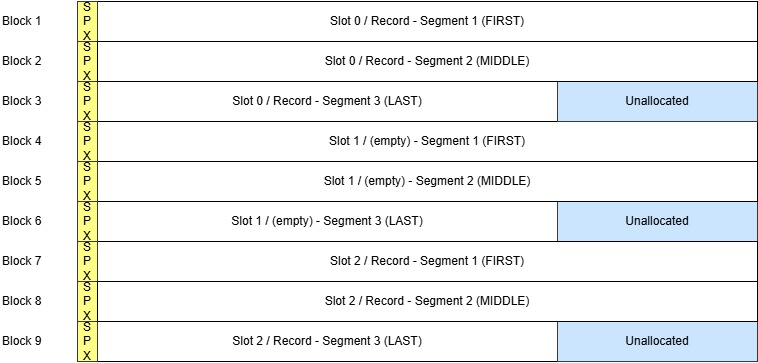
| Function | Notes |
|---|---|
| Add | Yes, but only to the end of the dataset |
| Update | Yes |
| Delete | Yes, slots may not be deleted. RPTR_MTY is set |
| Length change | n/a |
| Access by: | RRN |
RRDS Variable non-Spanned
V-type records are conceptually stored one after another, filling the block until no space is left. Every record is preceded by a Record Length Field (RLF).
An RRDS consists of slots (RRNs) which may or may not contain a record.
Empty slots consist of a dummy RLF containing X'00000004' with RPTR_MTY set, these are shown
in green in the diagram. Non-empty slots have a grey RLF.
When remaining free space is insufficient to accommodate another record, that free space remains unallocated (marked in blue) and the record is placed on the next block.
Below we show an example showing how various numbers of records might fit into the blocks
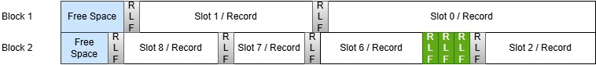
| Function | Notes |
|---|---|
| Add | Yes, but only to the end of the dataset |
| Update | Yes |
| Delete | Yes, slots may not be deleted. RPTR_MTY is set instead. |
| The record is replaced by a dummy RLF and the space is reclaimed | |
| Length change | Yes |
| Access by: | RRN |
RRDS Variable Spanned
VS-type records are conceptually stored one after another, filling the block until no space is left. Every record is preceded by a Record Length Field (RLF).
An RRDS consists of slots (RRNs) which may or may not contain a record.
Empty slots consist of a dummy RLF containing X'00000004' with RPTR_MTY set, these are shown
in green in the diagram. Non-empty slots have a grey RLF.
When remaining free space is insufficient to accommodate another record, that free space remains unallocated (marked in blue) and the record is placed on the next block.
When a record length exceeds the available space in a block the record is split into segments, the first segment is created to fill an entire block, and the rest of the record goes into one or more secondary segments which are stored on the next blocks.
Each segment is preceded by a Segment Prefix (SPX, marked in yellow).
This dataset type is a zVSAM extension.
Below we show an example showing how various numbers of records might fit into the blocks
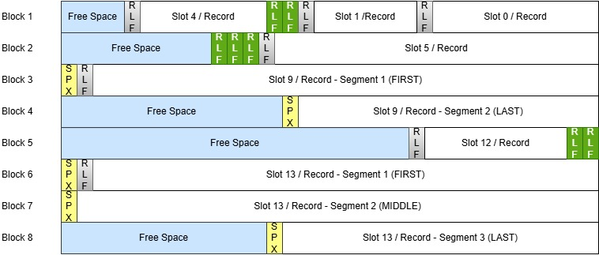
| Function | Notes |
|---|---|
| Add | Yes, but only to the end of the dataset |
| Update | Yes |
| Delete | Yes, slots may not be deleted. RPTR_MTY is set |
| The record is replaced by a dummy RLF and the space is reclaimed | |
| For segmented records, the freed blocks are marked as available | |
| Length change | Yes |
| Access by: | RRN |